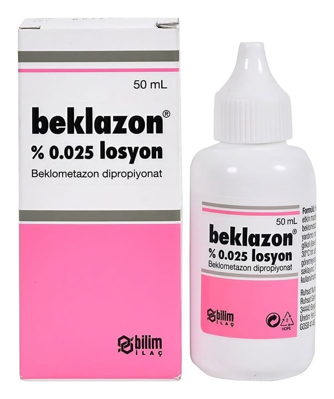

Beklazon % 0.025 Losyon, 50 ml

Ne için kullanılır
KT · Bölüm 1Her 50 mL BEKLAZON aktif madde olarak beklometazon dipropiyonat içerir
BEKLAZON 50 mL’lik özel damlalıklı, kapaklı, HDPE şişede, karton kutuda kullanıma sunulan renksiz, berrak sıvı görünümlü losyondur.
BEKLAZON, güçlü sınıftan yüzeyel bir kortikosteroid olan beklometazon dipropiyonat içerir.
BEKLAZON; çocuklar ve yetişkinlerde görülen atopik ve diskoid ekzema (alerjik ve plak oluşumu ile seyreden deri hastalıkları) da dahil olmak üzere farklı ekzema (iltihaplı bir çeşit deri hastalığı) formları; primer irritan ve alerjik dermatit (ışınlama ve fiziksel etkenlere bağlı deri hastalıkları); psöriyazis (sedef hastalığı) (yaygın plak psöriyazis hariç); liken simpleks (deri, deri ekleri ve mukozaları etkileyen iyi huylu deri hastalığı) de dahil olmak üzere nörodermatozlar (bir tür deri hastalığı), intertrigo (bir tür deri hastalığı), diskoid lupus eritomatozus (genellikle yüzde plak oluşumuna yol açan deri hastalığı) tedavisinde kullanılır.
BEKLAZON’un krem formu derinin nemli ve sızıntılı lezyonlarında, losyon formu derinin nemli veya kıllı olduğu alanlarda, pomad formu ise derinin kuru, likenifiye veya pullu lezyonlarında kullanılır.